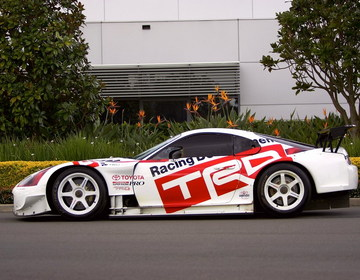
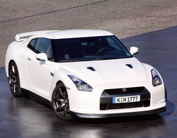

☰
Головна
Вибір автомобіля🚘

Toyota Supra

Nissan GT-R
Honda NSX
Lexus LFA
Subaru WRX STI
Toyota 2000GT
Nissan Skyline GT-R (R32)
Nissan Fairlady Z \ Datsun 240Z
Mitsubishi Lancer Evolution IV
Назад


-1.jpg)